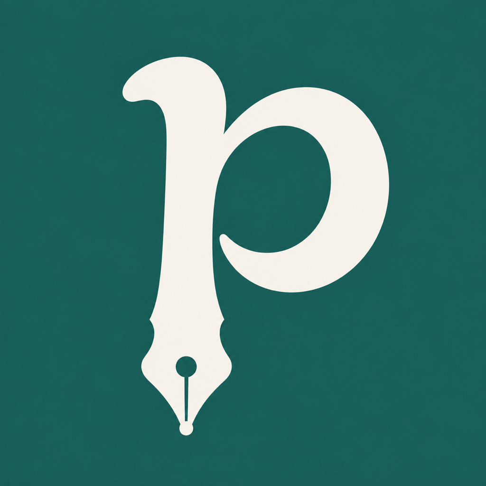

Your thoughts.
Room to grow.
A personal space for ideas in your own hand. Thoughtful tools, a little warmth, and help that meets you on the page.

A pen with a little personality.
Primary signature · teal mark, ink wordmark, ivory surface.
Dark signature · adaptive mint mark and warm white type.
A lowercase p becomes a fountain pen. The open, curved bowl keeps the gesture human. Keep the wordmark lowercase and the mark unaltered.
Warm paper. Confident ink.
#1B5D56#F7F4ED#FFFDF9#1A2B2A#7ECEB9Teal anchors actions and identity. Mint takes its place in dark mode. Let paper and whitespace do most of the work.
Editorial, with room to breathe.
Headings / System serif
to think.
New York on iOS. Georgia shown here as the web fallback.
Body / System sans
Start with a question, a sketch, or whatever is on your mind.
Native Dynamic Type. Plain language. One clear next step.
Recognizable, even at a glance.
One symbol, at every scale
The silhouette carries recognition at small sizes. iOS supplies the corner mask; the source icon is square.
What if I tried
another way?
Brand belongs around the page. Your handwriting belongs on it.
Helpful. Never in the way.
Voice
01“Ask Penpal.” Short, familiar actions.
02“Space for every side of you.” Warm, without pressure.
03“Try a different title or tag.” A clear way forward.
Behavior
A restrained spring. A subtle response to a press. No looping brand animation while someone writes.
Respect Reduce Motion. Use 48-point primary touch targets. Keep the logo away from functional navigation icons.